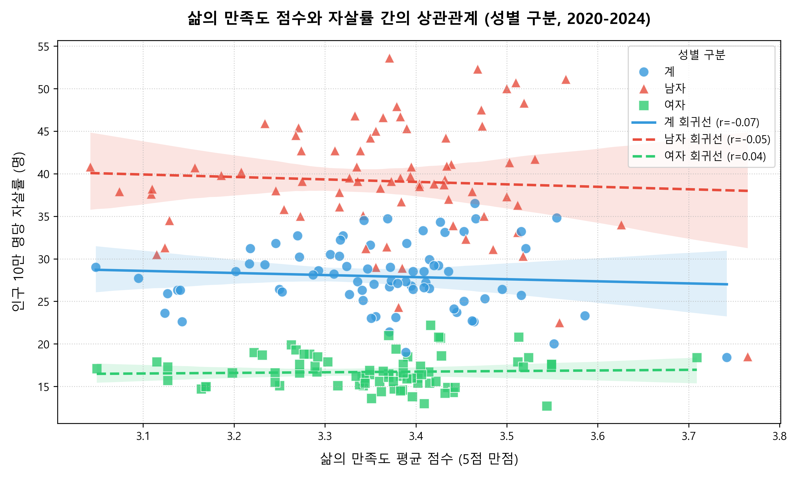
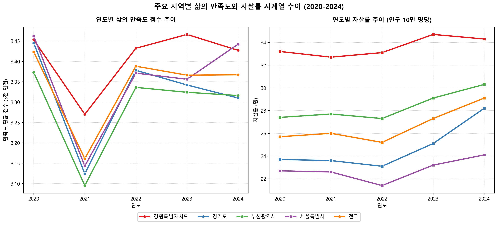
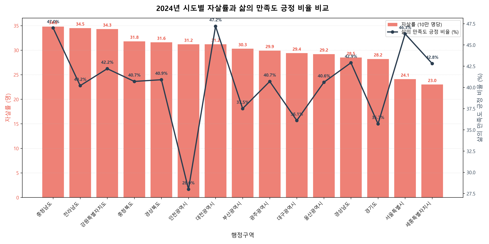
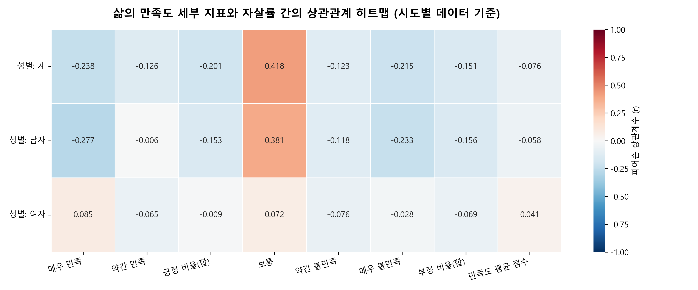

2020년부터 2024년까지의 한국의 17개 시도별 삶의 만족도 사회조사 결과와 실제 사망원인통계 자살률 간의 연관성을 심층 분석하였습니다.
5개년 데이터를 통합 분석한 결과, 전반적인 삶의 만족도 평균 점수와 자살률 간의 피어슨 상관계수는 -0.0688로 통계적으로 유의하지 않은 매우 낮은 수준이었습니다.
사회적 혼란이 컸던 2020년에는 음(-)의 상관관계(-0.5778, p < 0.05)가 뚜렷했습니다. 주관적인 정서 지표인 삶의 만족도가 높은 지역일수록 자살률이 눈에 띄게 낮았습니다.
2024년 데이터에서는 오히려 불만족 비율이 높은 지역의 자살률이 낮고, 불만족 비율이 가장 낮았던 충남이 가장 높은 자살률을 기록하는 역설적 경향(-0.4816)이 발견되었습니다.
전국 17개 시도의 만 13세 이상 가구원 대상, 주관적으로 느끼는 삶의 만족도를 5개 수준('매우 만족', '약간 만족', '보통', '약간 불만족', '매우 불만족') 비율(%)로 산출.
통계청 사망원인통계 연간 데이터. 시도 인구 10만 명당 자살 사망자 수(명)로 정의.
단순 긍정 비율 외에 연속형 변수로 정량화하기 위해, 만족도 설문의 5가지 수준 비율에 가중치를 부여한 5점 만점 척도의 가중 평균값을 활용했습니다.

이 산점도는 17개 시도별 연도 데이터를 산점도로 뿌리고, 성별 그룹(전체 계, 남성, 여성)에 따른 자살률과 만족도 점수의 연관성을 선형 회귀한 결과입니다.
전체 계($r = -0.07$), 남성($r = -0.05$), 여성($r = 0.04$) 모두의 회귀선이 X축과 평행에 가까워, 집단 전체를 모았을 때는 삶의 만족도 점수가 자살률을 유의하게 예측하지 못함을 보여줍니다.

전국 평균(전국) 및 서울, 부산, 경기, 강원 등 상징적인 주요 시도의 지난 5년간 변화 추이를 나타낸 선 그래프입니다.
자살률의 구조적 안정성: 자살률 순위(강원 > 부산 > 전국 > 경기 > 서울)는 시간 경과에 따라 변하지 않고 매우 고착화되어 있습니다. 반면, 삶의 만족도 점수는 연도별 주관적 변동에 의해 크게 휘어지는 경향을 보입니다.

2024년 기준 16개 시도별 자살률(내림차순, 막대그래프)과 삶의 만족도 긍정 응답 비율(꺾은선)을 하나의 축에 매핑한 그래프입니다.
**역설의 확인:** 자살률이 10만 명당 34.8명으로 가장 높은 충청남도의 만족도 긍정 비율(47.0%)이 서울(46.3%)이나 세종(42.8%)보다 오히려 더 높은 지점에 나타납니다. 주관적 만족과 실제 사망률 간의 불일치가 극명합니다.

설문조사의 5가지 세부 등급 응답률, 만족도 긍정 비율(합), 부정 비율(합), 그리고 종합 점수와 자살률 간의 상관성 매트릭스입니다.
빨간색 음영은 강한 음(-)의 상관을, 파란색은 양(+)의 상관을 뜻합니다. 긍정 비율은 자살률과 약간의 음(-)의 상관관계($-0.2$ 내외)를 띠는 편이지만 다른 지표들은 성별 구분에 따라 일관성이 상대적으로 낮습니다.
| 순위 | 행정구역 (지역) | 5개년 평균 자살률 (명) | 만족도 평균 점수 (5점) | 긍정 비율 (%) | 부정 비율 (%) |
|---|
가상으로 각 만족도 척도의 비율(%)을 마우스 슬라이더로 조절하여 가중평균 점수를 산출해보고, 5개년 한국 지자체의 실제 평균 점수 분포(최저 3.25점 ~ 최고 3.52점)와 비교해 보세요. (총합은 자동으로 100%로 보정됩니다)
사회조사의 삶의 만족도는 전체 인구 표본의 평균적 만족을 대변하지만, 자살은 경제적 고립, 극심한 노인 빈곤 등 사회적 사각지대 취약 계층에 집중됩니다. 농어촌 고령자 비율이 높은 충청남도나 강원특별자치도는 극심한 독거노인 문제가 자살률을 끌어올리지만, 표본 조사의 다수를 차지하는 비취약 가구원들의 만족도가 높게 드러나며 평균이 왜곡되는 현상이 나타납니다.
코로나19 유행 첫해인 2020년에는 심리적·사회적 붕괴가 광범위하게 일어나 만족도 저하가 즉각 자살 위험으로 번져 유의미한 음(-)의 상관관계가 나타났습니다. 그러나 일상 회복이 완료된 2024년에는 주민 전반의 주관적 기분은 사회지표에 맞춰 회복되었으나, 취약 계층의 구조적 자살 위험은 고령화 등 독자적인 사회구조 궤적을 그리며 고착화된 상태입니다.
자살 예방 정책은 단순히 일반 주민의 주관적 웰빙이나 만족도를 올리는 문화 공간 확충 등의 보편적 정책에 의존해서는 한계가 명백합니다. 삶의 만족도 설문에서 정상 범위로 분류되어 나타나지 않는 **독거 노인, 고령 무직층, 1인 빈곤가구** 등을 직접 발굴하고 경제·의료·사회 관계망을 핀포인트로 두텁게 보장하는 안전망 설계가 절실합니다.